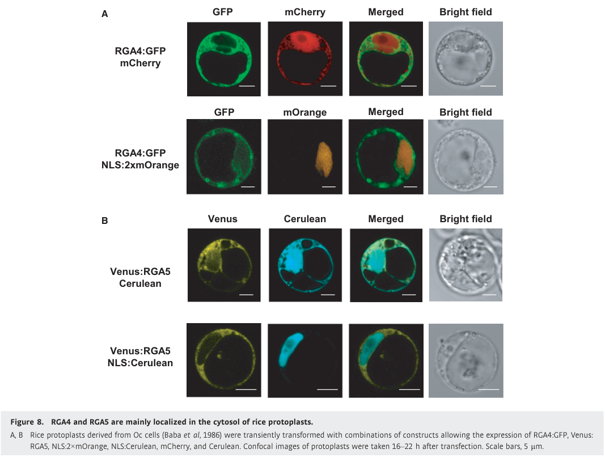

RGA4 (Os11gRGA4, SasRGA4) is a 996-residue coiled-coil, nucleotide-binding (NB-ARC), leucine-rich repeat (CC-NB-LRR, CNL) immune receptor of rice that, together with the adjacent and inversely oriented CNL gene RGA5, constitutes the Pia / Pi-CO39 blast resistance locus. The two proteins act as an obligate sensor/executor heteropair conferring recognition of the unrelated Magnaporthe oryzae effectors AVR-Pia and AVR1-CO39. RGA4 is the executor: it is an intrinsically (constitutively) active inducer of hypersensitive-response cell death, and this activity is held in check by RGA5, with which it forms hetero-complexes through its N-terminal coiled-coil domain; RGA4 also self-associates. RGA4 itself does not bind the effectors. Binding of AVR-Pia or AVR1-CO39 to the integrated heavy-metal-associated (HMA/RATX1) domain of RGA5 relieves the repression and RGA4 triggers cell death and resistance. RGA4 activity requires an intact P-loop (K209) in its NB-ARC domain, and its autoactivity depends on a degenerate MHD motif (TYG) in the ARC2 subdomain. RGA4 resides mainly in the cytosol and does not relocalise to the nucleus on effector recognition. When ectopically activated it also restricts Xanthomonas oryzae, showing that its immune output is not pathogen-specific.
| GO Term | Evidence | Action | Reason |
|---|---|---|---|
|
GO:0002758
innate immune response-activating signaling pathway
|
IDA
PMID:23548743 The rice resistance protein pair RGA4/RGA5 recognizes the Ma... |
ACCEPT |
Summary: RGA4 and RGA5 together are required for recognition of AVR1-CO39 and AVR-Pia and for triggering the immune response. Later work showed RGA4 is the component that generates the immune/cell-death signal once RGA5 repression is lifted.
Reason: RGA4 is the signalling executor of the RGA4/RGA5 pair, so it directly participates in the effector-triggered signalling pathway that activates innate immunity. GO has no host-side effector-triggered immunity signalling term, so this is the appropriate process term.
Supporting Evidence:
PMID:23548743
Two NB-LRR protein-coding genes from rice (Oryza sativa), RGA4 and RGA5, were found to be required for the recognition of the Magnaporthe oryzae effector AVR1-CO39.
PMID:25024433
RGA4 mediates cell death activation, while RGA5 acts as a repressor of RGA4 and as an AVR receptor.
|
|
GO:0002758
innate immune response-activating signaling pathway
|
IEA
GO_REF:0000117 |
ACCEPT |
Summary: ARBA machine-learning prediction for CNL proteins; consistent with the experimental IDA annotation for the same term.
Reason: Correct and experimentally corroborated for RGA4 as the signalling executor of the pair.
Supporting Evidence:
PMID:25024433
These results support the conclusion that cell death signaling is activated exclusively by RGA4 and that AVR-Pia binding does not lead to RGA5 activation but solely to RGA4 de-repression.
|
|
GO:0005515
protein binding
|
IPI
PMID:25024433 The NB-LRR proteins RGA4 and RGA5 interact functionally and ... |
MODIFY |
Summary: RGA4 co-immunoprecipitates with RGA5 in rice protoplasts and N. benthamiana, and the CC domains of the two proteins interact in yeast two-hybrid assays. RGA4 also self-associates.
Reason: The interaction is real but "protein binding" is uninformative. The interaction is a CC-domain-mediated hetero-complex with RGA5 (and a homo-complex with RGA4 itself), better captured by protein heterodimerization activity, with homodimerization as a secondary term. Dimer stoichiometry is not formally established, so these remain approximations of "hetero-/homo-complex formation".
Proposed replacements:
protein heterodimerization activity
protein homodimerization activity
Supporting Evidence:
PMID:25024433
RGA4 and RGA5 form homo- and hetero-complexes and interact through their coiled-coil domains.
PMID:25024433
CC-RGA4 1–130 and CC-RGA5 1–133 showed homo- and hetero-interactions
|
|
GO:0005737
cytoplasm
|
IDA
PMID:25024433 The NB-LRR proteins RGA4 and RGA5 interact functionally and ... |
ACCEPT |
Summary: RGA4:GFP is observed mainly in the cytosol of rice protoplasts, with little or no nuclear signal.
Reason: Directly observed; the cytosol annotation from the same paper is the more specific term, but cytoplasm is correct.
Supporting Evidence:
PMID:25024433
Green fluorescence of RGA4:GFP was observed mainly in the cytosol labeled by mCherry
|
|
GO:0005737
cytoplasm
|
IEA
GO_REF:0000044 |
ACCEPT |
Summary: Mapped from the UniProt subcellular location (Cytoplasm), which is itself based on PMID:25024433.
Reason: Consistent with the experimental localisation data.
Supporting Evidence:
PMID:25024433
These results suggest that RGA4 and RGA5 localize to the cytosol and are excluded from the nucleus.
|
|
GO:0005829
cytosol
|
EXP
PMID:25024433 The NB-LRR proteins RGA4 and RGA5 interact functionally and ... |
ACCEPT |
Summary: RGA4 co-localises with a cytosolic mCherry marker in rice protoplasts and is not relocalised to the nucleus upon AVR-Pia recognition.
Reason: Most specific localisation supported by direct experimental data.
Supporting Evidence:
PMID:25024433
Upon recognition of AVR-Pia, neither RGA4 nor RGA5 is re-localized to the nucleus.
|
|
GO:0006952
defense response
|
IEA
GO_REF:0000002 |
MARK AS OVER ANNOTATED |
Summary: InterPro2GO mapping from the plant disease resistance protein family (IPR044974). Correct but very general.
Reason: True but uninformative; RGA4 already carries the more specific plant-type hypersensitive response and innate immune signalling terms, and a defense response to fungus annotation is proposed.
Supporting Evidence:
PMID:25024433
RGA4 and RGA5, two NB-LRRs from rice, interact functionally and physically to mediate resistance to the fungal pathogen Magnaporthe oryzae
|
|
GO:0009626
plant-type hypersensitive response
|
IEA
GO_REF:0000117 |
ACCEPT |
Summary: ARBA prediction; strongly corroborated by experimental data showing RGA4 is the executor of HR-like cell death.
Reason: Correct and core for RGA4.
Supporting Evidence:
PMID:25024433
Taken together, these results suggest that RGA4 acts as an HR executer which is regulated in its activity by RGA5.
|
|
GO:0009626
plant-type hypersensitive response
|
IMP
PMID:23548743 The rice resistance protein pair RGA4/RGA5 recognizes the Ma... |
ACCEPT |
Summary: Loss of RGA4 (and RGA5) abolishes AVR1-CO39/AVR-Pia-triggered resistance. The full text was not accessible; the abstract reports that both genes are required for effector recognition.
Reason: Consistent with the later demonstration that RGA4 is the HR executor; deferred to the curator who read the full text.
Supporting Evidence:
PMID:23548743
RGA4 and RGA5 also mediate recognition of the unrelated M. oryzae effector AVR-Pia, indicating that the corresponding R proteins possess dual recognition specificity.
PMID:25024433
RGA4 triggers an AVR-independent cell death that is repressed in the presence of RGA5 in both rice protoplasts and Nicotiana benthamiana.
|
|
GO:0009626
plant-type hypersensitive response
|
IMP
PMID:25024433 The NB-LRR proteins RGA4 and RGA5 interact functionally and ... |
ACCEPT |
Summary: RGA4 P-loop (K209R) and MHD-restoring/TYD mutants lose cell-death activity both alone and in the presence of RGA5 plus AVR-Pia; RGA5 silencing triggers cell death that depends entirely on RGA4.
Reason: Core function. RGA4 itself generates the HR cell death signal; this is the key executor annotation that distinguishes RGA4 from its sensor partner RGA5, which has no cell-death-inducing activity.
Supporting Evidence:
PMID:25024433
Thus, an intact RGA4 nucleotide-binding pocket is required for cell death induction by RGA4, either on its own or in the presence of RGA5 and AVR-Pia.
PMID:25024433
In the rga4 loss-of-function-mutant line Sas1493 (Okuyama et al , 2011 ), RGA5 depletion had no effect indicating that the cell death induced by RGA5 depletion relies entirely on RGA4.
|
|
GO:0042742
defense response to bacterium
|
IDA
PMID:23548743 The rice resistance protein pair RGA4/RGA5 recognizes the Ma... |
MARK AS OVER ANNOTATED |
Summary: The cached abstract of PMID:23548743 only addresses recognition of the fungal effectors AVR-Pia and AVR1-CO39, and full text could not be retrieved. Bacterial (Xanthomonas oryzae) resistance mediated by the RGA4/RGA5 pair was shown later, in engineered systems (PMID:27289079).
Reason: Not removed, because the supporting full text was not available to check. Biologically, RGA4 activation can restrict Xanthomonas oryzae, but only when AVR1-CO39 or an NLR is artificially induced by designer TAL effectors. There is no natural bacterial recognition specificity, so a bacterial defense term overstates RGA4's biological role. The same call is made for the sensor RGA5. The reference attribution may be worth rechecking against PMID:27289079.
Supporting Evidence:
PMID:27289079
This induced AVR1-CO39 expression and triggered BB and BLS resistance when the corresponding Pi-CO39 resistance locus was present.
|
|
GO:0042742
defense response to bacterium
|
IEA
GO_REF:0000117 |
MARK AS OVER ANNOTATED |
Summary: ARBA prediction from the CNL family, many of whose characterised members recognise bacterial effectors.
Reason: The only support is engineered Xanthomonas resistance through the RGA4/RGA5 pair. The natural function of RGA4 is resistance to the blast fungus, so this is an over-annotation (consistent with the RGA5 review).
Supporting Evidence:
PMID:27289079
demonstrating that NLR-triggered immune responses efficiently control Xoo
|
|
GO:0043531
ADP binding
|
IEA
GO_REF:0000002 |
ACCEPT |
Summary: InterPro2GO mapping from the NB-ARC domain. Nucleotide binding has not been measured for RGA4, but the P-loop lysine K209 is required for all RGA4 activity, implying a functional nucleotide-binding pocket.
Reason: The NB-ARC ADP-binding mapping is the standard family-level representation of the nucleotide-dependent switch in NLRs, and RGA4 is the partner in which that pocket is functionally required (unlike RGA5). RGA4's degenerate MHD motif is thought to keep it out of the ADP-bound, resting state. ATP binding may therefore describe the active form better, but neither nucleotide has been measured.
Supporting Evidence:
PMID:25024433
This finding suggests that RGA4 activity is likely to be dependent on nucleotide binding and exchange while RGA5 activity is not.
file:ORYSJ/RGA4/RGA4-deep-research-falcon.md
eliminated its spontaneous and AVR-Pia-associated cell-death activity
|
|
GO:0062207
regulation of pattern recognition receptor signaling pathway
|
EXP
PMID:25024433 The NB-LRR proteins RGA4 and RGA5 interact functionally and ... |
MODIFY |
Summary: PHI-base EXP annotation. PMID:25024433 (full text read) concerns effector recognition and cell-death activation by the intracellular CNL pair RGA4/RGA5. It contains no experiments on pattern recognition receptors or PRR signalling, which the paper explicitly distinguishes as the separate first layer of immunity.
Reason: The term does not describe what RGA4 does. RGA4 is not a regulator of PRR (pattern-triggered) signalling. It is the executor of effector-triggered NLR signalling and HR. The essence of the annotation (an immune signalling role shown in this paper) is better captured by innate immune response-activating signaling pathway. That would also keep it distinct from the sensor RGA5, whose role in the same paper is repression of RGA4.
Proposed replacements:
innate immune response-activating signaling pathway
Supporting Evidence:
PMID:25024433
The first layer of defense relies on the recognition of conserved microbe-associated molecular patterns (MAMPs) by the so-called pattern recognition receptors (PRRs).
PMID:25024433
These results establish a model for the interaction of hetero-pairs of NB-LRRs in plants
|
|
GO:0050832
defense response to fungus
|
IMP
PMID:25024433 The NB-LRR proteins RGA4 and RGA5 interact functionally and ... |
NEW |
Summary: RGA4 is required for Pia / Pi-CO39 resistance to Magnaporthe oryzae carrying AVR-Pia or AVR1-CO39. RGA4 loss-of-function mutants and P-loop or MHD mutants lose resistance or cell-death activity. No fungal defense term is present in GOA.
Reason: Participation test passed. RGA4 is not a substrate or a passive requirement: it is the component that itself produces the immune and cell-death signal that restricts the fungus, while RGA5 does the sensing. This is the natural, primary biological context of RGA4, and it is better supported than the bacterial defense terms already in GOA.
Supporting Evidence:
PMID:25024433
We show that RGA4 and RGA5, two NB-LRRs from rice, interact functionally and physically to mediate resistance to the fungal pathogen Magnaporthe oryzae
PMID:21251109
suggesting that SasRGA4 is necessary for Pia function
|
Q: GOA currently gives RGA4 (executor) and RGA5 (sensor) an almost identical set of annotations, drawn from the same two papers. Should RGA5's role be captured as negative regulation of RGA4-driven HR/immune signalling plus effector binding (innate immune receptor activity), and RGA4's as the positive executor of HR, so that the division of labour is machine-readable?
Q: Does activated RGA4 form an oligomeric resistosome with Ca2+-permeable channel activity, as shown for other CC-NLRs such as ZAR1 and Sr35? If so, what is the appropriate executor molecular function term?
Q: Is the defense response to bacterium IDA attributed to PMID:23548743 intended to reference PMID:27289079, the paper that tests Xanthomonas oryzae resistance?
Experiment: Purify full-length or CC-domain RGA4, test oligomerisation and membrane association after RGA5 removal or effector addition, and measure Ca2+-permeable channel activity (for example by electrophysiology in Xenopus oocytes or HEK cells) to define the executor biochemistry.
Experiment: Measure nucleotide binding of RGA4 (wild type, K209R and the MHD-restored and TYD variants) to determine whether its autoactive state is ATP-bound, which would decide between ADP binding and ATP binding as the correct molecular function term.
The research report should be a detailed narrative explaining the function, biological processes, and localization of the gene product. Citations should be given for all claims.
You should prioritize authoritative reviews and primary scientific literature when conducting research. You can supplement
this with annotations you find in gene/protein databases, but these can be outdated or inaccurate.
We are specifically interested in the primary function of the gene - for enzymes, what reaction is catalyzed, and what is the substrate specificity? For transporters, what is the substrate? For structural proteins or adapters, what is the broader structural role? For signaling molecules, what is the role in the pathway.
We are interested in where in or outside the cell the gene product carries out its function.
We are also interested in the signaling or biochemical pathways in which the gene functions. We are less interested in broad pleiotropic effects, except where these elucidate the precise role.
Include evidence where possible. We are interested in both experimental evidence as well as inference from structure, evolution, or bioinformatic analysis. Precise studies should be prioritized over high-throughput, where available.
Identity check. The supplied UniProt identifier F7J0M4 specifies disease-resistance protein RGA4, also called PIA, Os11gRGA4 or SasRGA4, from Oryza sativa subsp. japonica. This is consistent with primary studies of the functional rice Pia locus: RGA4 and its adjacent partner RGA5 are coiled-coil, nucleotide-binding, leucine-rich-repeat immune receptors (CC-NLRs) on rice chromosome 11. The UniProt domain calls supplied in the question—particularly NB-ARC and LRR—accord with that architecture. RGA4 is the signaling/helper member; RGA5 is the effector-binding sensor. The integrated heavy-metal-associated (HMA, also called RATX1) domain belongs to RGA5, not RGA4. The papers establish the functional rice protein identity but do not independently print accession F7J0M4; that accession-to-name mapping is therefore taken from the supplied UniProt record. (cesari2014thenb‐lrrproteins pages 1-2, cesari2013thericeresistance pages 3-5, xi2022theactivityof pages 1-2)
RGA4’s primary function is intracellular effector-triggered immune signaling against rice blast, caused by Magnaporthe oryzae. Rather than catalyzing a characterized metabolic reaction or transporting a known substrate, RGA4 acts as an NLR signaling switch that initiates hypersensitive-response-like cell death and resistance when its inhibitory interaction with RGA5 is functionally relieved. The pair responds to fungal effectors AVR-Pia and AVR1-CO39, which bind RGA5 directly. Calling RGA4 itself an AVR-binding protein would incorrectly assign RGA5’s experimentally demonstrated function to its partner. (cesari2013thericeresistance pages 1-2, cesari2014thenb‐lrrproteins pages 1-2, cesari2014thenb‐lrrproteins pages 11-13)
The principal evidence, including recent allele discovery and receptor engineering, is summarized below.
| Evidence level | Exact rice RGA4/Pia conclusion | Key source and date/DOI |
|---|---|---|
| Direct genetic evidence | RGA4 is necessary but not sufficient for Pia/Pi-CO39 resistance. Rice rga4 loss-of-function mutants lost AVR1-CO39-triggered resistance; susceptible rice acquired resistance only when both RGA4 and RGA5 were introduced. Effector binding was assigned to RGA5, not RGA4. (cesari2013thericeresistance pages 3-5, cesari2013thericeresistance pages 2-3) | Cesari et al., The Plant Cell, April 2013. doi:10.1105/tpc.112.107201 |
| Direct functional, mutational, interaction and localization evidence | RGA4 is the signaling and cell-death executor restrained by RGA5. RGA4 caused autoactive death in rice protoplasts and Nicotiana; RGA5 suppressed it, while AVR-Pia recognition by RGA5 relieved suppression. The RGA4 K209R P-loop mutation abolished activity, and replacing its unusual ARC2 TYG sequence with consensus MHD abolished autoactivity. RGA4-GFP was mainly cytosolic and weak or absent from nuclei; channel activity was not tested. (cesari2014thenb‐lrrproteins pages 3-4, cesari2014thenb‐lrrproteins pages 8-10, cesari2014thenb‐lrrproteins pages 11-13, cesari2014thenb‐lrrproteins media d397be32) | Césari et al., EMBO Journal, September 2014. doi:10.15252/embj.201487923 |
| Population genetics plus infection validation | Analysis of 500 diverse rice accessions, supported by 10 de novo assemblies, identified two additional functional Pia RGA4/RGA5 allele combinations. Despite extensive variation, including 66 RGA4 amino-acid differences in one accession, both recognized AVR-Pia and AVR1-CO39; specificity remained principally associated with the RGA5 HMA sensor domain. (greenwood2024genomewideassociationanalysis pages 4-6, greenwood2024genomewideassociationanalysis pages 8-9, greenwood2024genomewideassociationanalysis pages 1-2) | Greenwood et al., Communications Biology, May 2024. doi:10.1038/s42003-024-06244-z |
| Structure-guided engineering with transgenic-rice validation | Engineered RGA5-HMA5, containing three cooperating interfaces—two in the HMA domain and one in its Lys-rich C-terminal tail—redirected RGA4-dependent immunity to AVR-PikD. Five independent RGA4/RGA5-HMA5 rice lines were generated; the construct conferred complete AVR-PikD-dependent blast resistance but lost AVR-Pia recognition and resistance, showing that effector binding alone does not guarantee helper activation. (zhang2024thesyntheticnlr pages 5-8, zhang2024thesyntheticnlr pages 5-5, zhang2024thesyntheticnlr pages 8-9) | Zhang et al., Nature Communications, February 2024. doi:10.1038/s41467-024-45380-2 |
Table: Four tiers of evidence establish RGA4 as the cytosolic signaling and cell-death component of the rice Pia pair, while RGA5 supplies direct effector recognition. The table also summarizes recent natural-allele discovery and structure-guided receptor engineering.
The established pathway is fungal effector delivery into a rice cell → direct effector binding to RGA5’s C-terminal HMA/RATX1 domain → release of RGA5’s restraint on RGA4 → RGA4-dependent immune activation, localized cell death and restriction of fungal growth. RGA4 and RGA5 associate in the absence of effector and remain associated after AVR-Pia recognition; release of inhibition therefore should not be misread as demonstrated physical dissociation of the pair. Their coiled-coil regions contribute to homo- and heterocomplex formation. Deleting RGA5’s HMA region removes recognition while retaining its capacity to repress RGA4, experimentally separating sensing from regulation. (cesari2014thenb‐lrrproteins pages 1-2, xi2022theactivityof pages 1-2, cesari2014thenb‐lrrproteins pages 8-10)
Genetic tests establish that RGA4 is indispensable to this pathway. Two independent rga4 mutant lines lost resistance to an AVR1-CO39-expressing fungal strain. In susceptible Kanto51 rice, introducing RGA4 alone or RGA5 alone did not confer resistance, whereas introducing both did; these experiments also distinguished effector-dependent resistance from susceptibility to the empty-vector fungal control. Yeast two-hybrid, coimmunoprecipitation and FRET–FLIM instead assigned direct AVR-Pia/AVR1-CO39 binding to the functional RGA5-A splice isoform. (cesari2013thericeresistance pages 1-2, cesari2013thericeresistance pages 3-5, cesari2013thericeresistance pages 2-3)
The biochemical interpretation is a nucleotide-dependent signaling switch, not an established substrate-processing enzyme. Replacing the conserved RGA4 NB-ARC P-loop lysine with arginine (K209R) eliminated its spontaneous and AVR-Pia-associated cell-death activity. An analogous RGA5 P-loop mutation did not eliminate RGA5-mediated suppression or AVR-Pia-dependent relief of suppression. RGA4’s atypical TYG sequence at the otherwise conserved MHD position contributes to its autoactivity: restoring consensus MHD abolished that activity, and substitutions implicate the glycine in the tested variants. These are functional mutagenesis results; a particular ATP-hydrolysis reaction rate or physiological enzymatic substrate has not been established for RGA4. (cesari2014thenb‐lrrproteins pages 5-7, cesari2014thenb‐lrrproteins pages 3-4, cesari2014thenb‐lrrproteins pages 11-13)
RGA4 can cause cell death when experimentally expressed without sufficient RGA5, but the intact pair normally restrains this potentially harmful response. Depleting RGA5 in rice also derepressed RGA4-dependent cell death. This negative-regulation model is supported directly for RGA4/RGA5; it should not automatically be generalized to all paired rice NLRs, some of which operate through different cooperative mechanisms. (cesari2014thenb‐lrrproteins pages 1-2, cesari2014thenb‐lrrproteins pages 2-3, contreras2023nlrreceptorsin pages 8-9)
The strongest protein-specific localization evidence places RGA4 mainly in the rice-cell cytosol. Functional RGA4–GFP and Venus–RGA5 fusions were examined by confocal microscopy in rice protoplasts. RGA4–GFP overlapped a cytosolic marker but showed no, or only weak, nuclear signal; neither coexpression with RGA5 nor AVR-Pia recognition caused detectable nuclear relocalization. The cropped primary-study localization panel directly illustrates the cytosolic-versus-nuclear comparison. This supports signaling inside the host cell, not secretion or a demonstrated extracellular or constitutively plasma-membrane location. (cesari2014thenb‐lrrproteins pages 8-10, cesari2014thenb‐lrrproteins media d397be32)
Other CC-NLRs can form membrane-associated calcium-permeable resistosomes, but a defined RGA4 oligomeric resistosome, RGA4-specific ion-channel conductance, and a required plasma-membrane site have not been demonstrated in the cited RGA4 studies. Recent expert biochemical reviews treat an analogous mechanism for sensor–helper pairs as a possibility, not a result that can be assigned to RGA4. Its immediate downstream signaling partners and the steps connecting activation to cell death remain incompletely defined. (locci2024plantnlrimmunity pages 5-6, xi2022insightintothe pages 9-11, chai2023newbiochemicalprinciples pages 2-3)
Natural resistance variation, 2024. Greenwood and colleagues screened 500 genetically diverse rice accessions, made 10 de novo genome assemblies, and identified two additional functional Pia-associated RGA4/RGA5 allele combinations. Five assembled accessions with the resistance association contained RGA4/RGA5, and a functional RGA4 variant in one accession differed from Sasanishiki RGA4 at 66 amino acids. Tested additional alleles recognized both AVR-Pia and AVR1-CO39, but resistance was not universal against altered effector alleles: isolates carrying AVR-Pia-H3 overcame the assayed variants. This makes allele identity and local pathogen effector genotype relevant to marker-assisted breeding, rather than allowing an unqualified claim that every RGA4 allele protects against every blast isolate. The japonica Nipponbare reference also carries an RGA4-like pseudogene, Os11g11790, not an interchangeable copy of functional Sasanishiki RGA4; Nipponbare’s RGA5-related Os11g11810 lacks the functional HMA recognition region. (greenwood2024genomewideassociationanalysis pages 4-6, greenwood2024genomewideassociationanalysis pages 8-9, greenwood2024genomewideassociationanalysis pages 1-2, cesari2014thenb‐lrrproteins pages 11-13)
Structure-guided receptor engineering, 2024. Zhang and colleagues altered the sensor, creating RGA5-HMA5 with two engineered HMA interfaces and a third interface in the adjacent lysine-rich tail. In combination with RGA4, it conferred complete resistance in experimental transgenic rice to blast strains expressing the otherwise noncognate effector AVR-PikD. They generated five independent transgenic lines; reported fungal-biomass analysis used nine biological replicates from three lines. Constructs capable of binding AVR-PikD through fewer engineered interfaces nevertheless failed to activate RGA4-dependent cell death: binding alone is insufficient for productive signaling. Crucially, this particular redesigned receptor lost detectable AVR-Pia recognition/resistance; it is an example of redirected specificity, not proven addition of AVR-PikD protection without a trade-off. Earlier RGA5 designs likewise showed that an engineered recognition response in Nicotiana need not translate into resistance in rice. These remain experimental transgenic implementations, not evidence of commercial field deployment. (zhang2024thesyntheticnlr pages 5-8, zhang2024thesyntheticnlr pages 5-5, zhang2024thesyntheticnlr pages 8-9)
Additional proof of concept and durability limits. Experimentally inducing the RGA4/RGA5 pathway with an introduced AVR1-CO39 gene and designer bacterial TAL effectors protected suitably engineered rice from Xanthomonas oryzae bacterial blight and leaf streak; TAL-effector-driven RGA4 expression itself also restricted bacterial blight in RGA4-containing cultivars. Those results demonstrate the broader protective capacity of the activated pathway, not natural RGA4 recognition of bacterial effectors or protection against unmodified bacteria in farmers’ fields. Effector-dependent specificity presents a durability constraint: in a 2013 survey of 50 blast-fungus isolates, only four were avirulent on Pia-diagnostic rice via functional AVR-Pia, while a naturally occurring AVR-Pia F24S change disrupted detectable RGA5 binding and recognition. Evolutionary work further suggests that conserved helper activity can be paired with diversifying sensor recognition: the Pia-related helper Pias-1 could operate with RGA5, although this does not mean Pias-1 and F7J0M4 are the same protein. (cesari2013thericeresistance pages 9-10, shimizu2022ageneticallylinked pages 1-2, hutin2016ectopicactivationof pages 5-7, hutin2016ectopicactivationof pages 7-9)
Annotation conclusion. For rice RGA4/F7J0M4, the evidence-supported functional annotation is predominantly cytosolic CC–NB-ARC–LRR helper/executor of RGA5-dependent blast effector-triggered immunity, required for hypersensitive cell death and resistance. Its nucleotide-binding motif is functionally important; direct fungal-effector binding is the responsibility of RGA5. Specific RGA4 catalytic chemistry, a transported substrate, a resolved channel/resistosome, and exact downstream signaling partners should remain unassigned pending direct evidence. (cesari2014thenb‐lrrproteins pages 3-4, cesari2013thericeresistance pages 3-5, cesari2014thenb‐lrrproteins pages 8-10, locci2024plantnlrimmunity pages 5-6)
References
(cesari2014thenb‐lrrproteins pages 1-2): Stella Césari, Hiroyuki Kanzaki, Tadashi Fujiwara, Maud Bernoux, Véronique Chalvon, Yoji Kawano, Ko Shimamoto, Peter Dodds, Ryohei Terauchi, and Thomas Kroj. The nb‐lrr proteins rga4 and rga5 interact functionally and physically to confer disease resistance. The EMBO Journal, 33:1941-1959, Sep 2014. URL: https://doi.org/10.15252/embj.201487923, doi:10.15252/embj.201487923. This article has 454 citations.
(cesari2013thericeresistance pages 3-5): Stella Cesari, Gaëtan Thilliez, Cécile Ribot, Véronique Chalvon, Corinne Michel, Alain Jauneau, Susana Rivas, Ludovic Alaux, Hiroyuki Kanzaki, Yudai Okuyama, Jean-Benoit Morel, Elisabeth Fournier, Didier Tharreau, Ryohei Terauchi, and Thomas Kroj. The rice resistance protein pair rga4/rga5 recognizes the magnaporthe oryzae effectors avr-pia and avr1-co39 by direct binding. The Plant Cell, 25(4):1463-1481, Apr 2013. URL: https://doi.org/10.1105/tpc.112.107201, doi:10.1105/tpc.112.107201. This article has 696 citations.
(xi2022theactivityof pages 1-2): Yuxuan Xi, Véronique Chalvon, André Padilla, Stella Cesari, and Thomas Kroj. The activity of the rga5 sensor nlr from rice requires binding of its integrated hma domain to effectors but not hma domain self‐interaction. Molecular Plant Pathology, 23:1320-1330, Jun 2022. URL: https://doi.org/10.1111/mpp.13236, doi:10.1111/mpp.13236. This article has 7 citations and is from a peer-reviewed journal.
(cesari2013thericeresistance pages 1-2): Stella Cesari, Gaëtan Thilliez, Cécile Ribot, Véronique Chalvon, Corinne Michel, Alain Jauneau, Susana Rivas, Ludovic Alaux, Hiroyuki Kanzaki, Yudai Okuyama, Jean-Benoit Morel, Elisabeth Fournier, Didier Tharreau, Ryohei Terauchi, and Thomas Kroj. The rice resistance protein pair rga4/rga5 recognizes the magnaporthe oryzae effectors avr-pia and avr1-co39 by direct binding. The Plant Cell, 25(4):1463-1481, Apr 2013. URL: https://doi.org/10.1105/tpc.112.107201, doi:10.1105/tpc.112.107201. This article has 696 citations.
(cesari2014thenb‐lrrproteins pages 11-13): Stella Césari, Hiroyuki Kanzaki, Tadashi Fujiwara, Maud Bernoux, Véronique Chalvon, Yoji Kawano, Ko Shimamoto, Peter Dodds, Ryohei Terauchi, and Thomas Kroj. The nb‐lrr proteins rga4 and rga5 interact functionally and physically to confer disease resistance. The EMBO Journal, 33:1941-1959, Sep 2014. URL: https://doi.org/10.15252/embj.201487923, doi:10.15252/embj.201487923. This article has 454 citations.
(cesari2013thericeresistance pages 2-3): Stella Cesari, Gaëtan Thilliez, Cécile Ribot, Véronique Chalvon, Corinne Michel, Alain Jauneau, Susana Rivas, Ludovic Alaux, Hiroyuki Kanzaki, Yudai Okuyama, Jean-Benoit Morel, Elisabeth Fournier, Didier Tharreau, Ryohei Terauchi, and Thomas Kroj. The rice resistance protein pair rga4/rga5 recognizes the magnaporthe oryzae effectors avr-pia and avr1-co39 by direct binding. The Plant Cell, 25(4):1463-1481, Apr 2013. URL: https://doi.org/10.1105/tpc.112.107201, doi:10.1105/tpc.112.107201. This article has 696 citations.
(cesari2014thenb‐lrrproteins pages 3-4): Stella Césari, Hiroyuki Kanzaki, Tadashi Fujiwara, Maud Bernoux, Véronique Chalvon, Yoji Kawano, Ko Shimamoto, Peter Dodds, Ryohei Terauchi, and Thomas Kroj. The nb‐lrr proteins rga4 and rga5 interact functionally and physically to confer disease resistance. The EMBO Journal, 33:1941-1959, Sep 2014. URL: https://doi.org/10.15252/embj.201487923, doi:10.15252/embj.201487923. This article has 454 citations.
(cesari2014thenb‐lrrproteins pages 8-10): Stella Césari, Hiroyuki Kanzaki, Tadashi Fujiwara, Maud Bernoux, Véronique Chalvon, Yoji Kawano, Ko Shimamoto, Peter Dodds, Ryohei Terauchi, and Thomas Kroj. The nb‐lrr proteins rga4 and rga5 interact functionally and physically to confer disease resistance. The EMBO Journal, 33:1941-1959, Sep 2014. URL: https://doi.org/10.15252/embj.201487923, doi:10.15252/embj.201487923. This article has 454 citations.
(cesari2014thenb‐lrrproteins media d397be32): Stella Césari, Hiroyuki Kanzaki, Tadashi Fujiwara, Maud Bernoux, Véronique Chalvon, Yoji Kawano, Ko Shimamoto, Peter Dodds, Ryohei Terauchi, and Thomas Kroj. The nb‐lrr proteins rga4 and rga5 interact functionally and physically to confer disease resistance. The EMBO Journal, 33:1941-1959, Sep 2014. URL: https://doi.org/10.15252/embj.201487923, doi:10.15252/embj.201487923. This article has 454 citations.
(greenwood2024genomewideassociationanalysis pages 4-6): Julian R. Greenwood, Vanica Lacorte-Apostol, Thomas Kroj, Jonas Padilla, Mary Jeanie Telebanco-Yanoria, Anna N. Glaus, Anne Roulin, André Padilla, Bo Zhou, Beat Keller, and Simon G. Krattinger. Genome-wide association analysis uncovers rice blast resistance alleles of ptr and pia. Communications Biology, May 2024. URL: https://doi.org/10.1038/s42003-024-06244-z, doi:10.1038/s42003-024-06244-z. This article has 35 citations and is from a peer-reviewed journal.
(greenwood2024genomewideassociationanalysis pages 8-9): Julian R. Greenwood, Vanica Lacorte-Apostol, Thomas Kroj, Jonas Padilla, Mary Jeanie Telebanco-Yanoria, Anna N. Glaus, Anne Roulin, André Padilla, Bo Zhou, Beat Keller, and Simon G. Krattinger. Genome-wide association analysis uncovers rice blast resistance alleles of ptr and pia. Communications Biology, May 2024. URL: https://doi.org/10.1038/s42003-024-06244-z, doi:10.1038/s42003-024-06244-z. This article has 35 citations and is from a peer-reviewed journal.
(greenwood2024genomewideassociationanalysis pages 1-2): Julian R. Greenwood, Vanica Lacorte-Apostol, Thomas Kroj, Jonas Padilla, Mary Jeanie Telebanco-Yanoria, Anna N. Glaus, Anne Roulin, André Padilla, Bo Zhou, Beat Keller, and Simon G. Krattinger. Genome-wide association analysis uncovers rice blast resistance alleles of ptr and pia. Communications Biology, May 2024. URL: https://doi.org/10.1038/s42003-024-06244-z, doi:10.1038/s42003-024-06244-z. This article has 35 citations and is from a peer-reviewed journal.
(zhang2024thesyntheticnlr pages 5-8): Xin Zhang, Yang Liu, Guixin Yuan, Shiwei Wang, Dongli Wang, Tongtong Zhu, Xuefeng Wu, Mengqi Ma, Liwei Guo, Hailong Guo, Vijai Bhadauria, Junfeng Liu, and You-Liang Peng. The synthetic nlr rga5hma5 requires multiple interfaces within and outside the integrated domain for effector recognition. Nature Communications, Feb 2024. URL: https://doi.org/10.1038/s41467-024-45380-2, doi:10.1038/s41467-024-45380-2. This article has 40 citations and is from a highest quality peer-reviewed journal.
(zhang2024thesyntheticnlr pages 5-5): Xin Zhang, Yang Liu, Guixin Yuan, Shiwei Wang, Dongli Wang, Tongtong Zhu, Xuefeng Wu, Mengqi Ma, Liwei Guo, Hailong Guo, Vijai Bhadauria, Junfeng Liu, and You-Liang Peng. The synthetic nlr rga5hma5 requires multiple interfaces within and outside the integrated domain for effector recognition. Nature Communications, Feb 2024. URL: https://doi.org/10.1038/s41467-024-45380-2, doi:10.1038/s41467-024-45380-2. This article has 40 citations and is from a highest quality peer-reviewed journal.
(zhang2024thesyntheticnlr pages 8-9): Xin Zhang, Yang Liu, Guixin Yuan, Shiwei Wang, Dongli Wang, Tongtong Zhu, Xuefeng Wu, Mengqi Ma, Liwei Guo, Hailong Guo, Vijai Bhadauria, Junfeng Liu, and You-Liang Peng. The synthetic nlr rga5hma5 requires multiple interfaces within and outside the integrated domain for effector recognition. Nature Communications, Feb 2024. URL: https://doi.org/10.1038/s41467-024-45380-2, doi:10.1038/s41467-024-45380-2. This article has 40 citations and is from a highest quality peer-reviewed journal.
(cesari2014thenb‐lrrproteins pages 5-7): Stella Césari, Hiroyuki Kanzaki, Tadashi Fujiwara, Maud Bernoux, Véronique Chalvon, Yoji Kawano, Ko Shimamoto, Peter Dodds, Ryohei Terauchi, and Thomas Kroj. The nb‐lrr proteins rga4 and rga5 interact functionally and physically to confer disease resistance. The EMBO Journal, 33:1941-1959, Sep 2014. URL: https://doi.org/10.15252/embj.201487923, doi:10.15252/embj.201487923. This article has 454 citations.
(cesari2014thenb‐lrrproteins pages 2-3): Stella Césari, Hiroyuki Kanzaki, Tadashi Fujiwara, Maud Bernoux, Véronique Chalvon, Yoji Kawano, Ko Shimamoto, Peter Dodds, Ryohei Terauchi, and Thomas Kroj. The nb‐lrr proteins rga4 and rga5 interact functionally and physically to confer disease resistance. The EMBO Journal, 33:1941-1959, Sep 2014. URL: https://doi.org/10.15252/embj.201487923, doi:10.15252/embj.201487923. This article has 454 citations.
(contreras2023nlrreceptorsin pages 8-9): Mauricio P Contreras, Daniel Lüdke, Hsuan Pai, AmirAli Toghani, and Sophien Kamoun. Nlr receptors in plant immunity: making sense of the alphabet soup. EMBO Reports, Aug 2023. URL: https://doi.org/10.15252/embr.202357495, doi:10.15252/embr.202357495. This article has 208 citations and is from a highest quality peer-reviewed journal.
(locci2024plantnlrimmunity pages 5-6): Federica Locci and Jane E. Parker. Plant nlr immunity activation and execution: a biochemical perspective. Open Biology, Jan 2024. URL: https://doi.org/10.1098/rsob.230387, doi:10.1098/rsob.230387. This article has 57 citations and is from a peer-reviewed journal.
(xi2022insightintothe pages 9-11): Yuxuan Xi, Stella Cesari, and Thomas Kroj. Insight into the structure and molecular mode of action of plant paired nlr immune receptors. Essays in Biochemistry, 66:513-526, Sep 2022. URL: https://doi.org/10.1042/ebc20210079, doi:10.1042/ebc20210079. This article has 45 citations and is from a peer-reviewed journal.
(chai2023newbiochemicalprinciples pages 2-3): Jijie Chai, Wen Song, and Jane E. Parker. New biochemical principles for nlr immunity in plants. Molecular plant-microbe interactions : MPMI, 36:MPMI05230073HH, Aug 2023. URL: https://doi.org/10.1094/mpmi-05-23-0073-hh, doi:10.1094/mpmi-05-23-0073-hh. This article has 55 citations.
(cesari2013thericeresistance pages 9-10): Stella Cesari, Gaëtan Thilliez, Cécile Ribot, Véronique Chalvon, Corinne Michel, Alain Jauneau, Susana Rivas, Ludovic Alaux, Hiroyuki Kanzaki, Yudai Okuyama, Jean-Benoit Morel, Elisabeth Fournier, Didier Tharreau, Ryohei Terauchi, and Thomas Kroj. The rice resistance protein pair rga4/rga5 recognizes the magnaporthe oryzae effectors avr-pia and avr1-co39 by direct binding. The Plant Cell, 25(4):1463-1481, Apr 2013. URL: https://doi.org/10.1105/tpc.112.107201, doi:10.1105/tpc.112.107201. This article has 696 citations.
(shimizu2022ageneticallylinked pages 1-2): Motoki Shimizu, Akiko Hirabuchi, Yu Sugihara, Akira Abe, Takumi Takeda, Michie Kobayashi, Yukie Hiraka, Eiko Kanzaki, Kaori Oikawa, Hiromasa Saitoh, Thorsten Langner, Mark J. Banfield, Sophien Kamoun, and Ryohei Terauchi. A genetically linked pair of nlr immune receptors shows contrasting patterns of evolution. Jun 2022. URL: https://doi.org/10.1073/pnas.2116896119, doi:10.1073/pnas.2116896119. This article has 71 citations and is from a highest quality peer-reviewed journal.
(hutin2016ectopicactivationof pages 5-7): Mathilde Hutin, Stella Césari, Véronique Chalvon, Corinne Michel, Tuan Tu Tran, Jens Boch, Ralf Koebnik, Boris Szurek, and Thomas Kroj. Ectopic activation of the rice nlr heteropair rga4/rga5 confers resistance to bacterial blight and bacterial leaf streak diseases. The Plant journal : for cell and molecular biology, 88 1:43-55, Oct 2016. URL: https://doi.org/10.1111/tpj.13231, doi:10.1111/tpj.13231. This article has 48 citations.
(hutin2016ectopicactivationof pages 7-9): Mathilde Hutin, Stella Césari, Véronique Chalvon, Corinne Michel, Tuan Tu Tran, Jens Boch, Ralf Koebnik, Boris Szurek, and Thomas Kroj. Ectopic activation of the rice nlr heteropair rga4/rga5 confers resistance to bacterial blight and bacterial leaf streak diseases. The Plant journal : for cell and molecular biology, 88 1:43-55, Oct 2016. URL: https://doi.org/10.1111/tpj.13231, doi:10.1111/tpj.13231. This article has 48 citations.
(zhang2024thesyntheticnlr pages 1-2): Xin Zhang, Yang Liu, Guixin Yuan, Shiwei Wang, Dongli Wang, Tongtong Zhu, Xuefeng Wu, Mengqi Ma, Liwei Guo, Hailong Guo, Vijai Bhadauria, Junfeng Liu, and You-Liang Peng. The synthetic nlr rga5hma5 requires multiple interfaces within and outside the integrated domain for effector recognition. Nature Communications, Feb 2024. URL: https://doi.org/10.1038/s41467-024-45380-2, doi:10.1038/s41467-024-45380-2. This article has 40 citations and is from a highest quality peer-reviewed journal.

Sources: UniProt F7J0M4, GOA (14 rows), falcon deep research, cached publications
PMID:25024433 (full text), PMID:23548743, PMID:21251109, PMID:27289079 (abstract only).
Full text of PMID:23548743 was not retrievable via PMC (PubMed MCP returned abstract only).
GOA rows for RGA4 and RGA5 are nearly identical (same IDA/IMP/EXP set from the same two papers, same ARBA/InterPro IEAs). Only difference: RGA5 has innate immune receptor activity (EXP) and metal ion binding (IEA, HMA). After review, RGA4 distinctive terms: HR execution (core), heterodimerization with RGA5, nucleotide-binding-dependent signalling; RGA5's PRR-regulation row would map to negative regulation of RGA4 signalling instead.
id: F7J0M4
gene_symbol: RGA4
product_type: PROTEIN
status: COMPLETE
taxon:
id: NCBITaxon:39947
label: Oryza sativa Japonica Group
description: >-
RGA4 (Os11gRGA4, SasRGA4) is a 996-residue coiled-coil, nucleotide-binding
(NB-ARC), leucine-rich repeat (CC-NB-LRR, CNL) immune receptor of rice that,
together with the adjacent and inversely oriented CNL gene RGA5, constitutes
the Pia / Pi-CO39 blast resistance locus. The two proteins act as an
obligate sensor/executor heteropair conferring recognition of the unrelated
Magnaporthe oryzae effectors AVR-Pia and AVR1-CO39. RGA4 is the executor: it
is an intrinsically (constitutively) active inducer of hypersensitive-response
cell death, and this activity is held in check by RGA5, with which it forms
hetero-complexes through its N-terminal coiled-coil domain; RGA4 also
self-associates. RGA4 itself does not bind the effectors. Binding of AVR-Pia
or AVR1-CO39 to the integrated heavy-metal-associated (HMA/RATX1) domain of
RGA5 relieves the repression and RGA4 triggers cell death and resistance.
RGA4 activity requires an intact P-loop (K209) in its NB-ARC domain, and its
autoactivity depends on a degenerate MHD motif (TYG) in the ARC2 subdomain.
RGA4 resides mainly in the cytosol and does not relocalise to the nucleus on
effector recognition. When ectopically activated it also restricts
Xanthomonas oryzae, showing that its immune output is not pathogen-specific.
existing_annotations:
- term:
id: GO:0002758
label: innate immune response-activating signaling pathway
evidence_type: IDA
original_reference_id: PMID:23548743
qualifier: involved_in
review:
summary: >-
RGA4 and RGA5 together are required for recognition of AVR1-CO39 and
AVR-Pia and for triggering the immune response. Later work showed RGA4 is
the component that generates the immune/cell-death signal once RGA5
repression is lifted.
action: ACCEPT
reason: >-
RGA4 is the signalling executor of the RGA4/RGA5 pair, so it directly
participates in the effector-triggered signalling pathway that activates
innate immunity. GO has no host-side effector-triggered immunity
signalling term, so this is the appropriate process term.
supported_by:
- reference_id: PMID:23548743
supporting_text: Two NB-LRR protein-coding genes from rice (Oryza sativa), RGA4
and RGA5, were found to be required for the recognition of the Magnaporthe
oryzae effector AVR1-CO39.
- reference_id: PMID:25024433
supporting_text: RGA4 mediates cell death activation, while RGA5 acts as a repressor
of RGA4 and as an AVR receptor.
- term:
id: GO:0002758
label: innate immune response-activating signaling pathway
evidence_type: IEA
original_reference_id: GO_REF:0000117
qualifier: involved_in
supporting_entities:
- ARBA:ARBA00034398
review:
summary: >-
ARBA machine-learning prediction for CNL proteins; consistent with the
experimental IDA annotation for the same term.
action: ACCEPT
reason: >-
Correct and experimentally corroborated for RGA4 as the signalling
executor of the pair.
supported_by:
- reference_id: PMID:25024433
supporting_text: These results support the conclusion that cell death signaling
is activated exclusively by RGA4 and that AVR-Pia binding does not lead to
RGA5 activation but solely to RGA4 de-repression.
- term:
id: GO:0005515
label: protein binding
evidence_type: IPI
original_reference_id: PMID:25024433
qualifier: enables
supporting_entities:
- UniProtKB:F7J0N2
review:
summary: >-
RGA4 co-immunoprecipitates with RGA5 in rice protoplasts and N.
benthamiana, and the CC domains of the two proteins interact in yeast
two-hybrid assays. RGA4 also self-associates.
action: MODIFY
reason: >-
The interaction is real but "protein binding" is uninformative. The
interaction is a CC-domain-mediated hetero-complex with RGA5 (and a
homo-complex with RGA4 itself), better captured by protein
heterodimerization activity, with homodimerization as a secondary term.
Dimer stoichiometry is not formally established, so these remain
approximations of "hetero-/homo-complex formation".
proposed_replacement_terms:
- id: GO:0046982
label: protein heterodimerization activity
- id: GO:0042803
label: protein homodimerization activity
supported_by:
- reference_id: PMID:25024433
supporting_text: RGA4 and RGA5 form homo- and hetero-complexes and interact through
their coiled-coil domains.
- reference_id: PMID:25024433
supporting_text: CC-RGA4 1–130 and CC-RGA5 1–133 showed homo- and hetero-interactions
- term:
id: GO:0005737
label: cytoplasm
evidence_type: IDA
original_reference_id: PMID:25024433
qualifier: located_in
review:
summary: >-
RGA4:GFP is observed mainly in the cytosol of rice protoplasts, with little
or no nuclear signal.
action: ACCEPT
reason: >-
Directly observed; the cytosol annotation from the same paper is the more
specific term, but cytoplasm is correct.
supported_by:
- reference_id: PMID:25024433
supporting_text: Green fluorescence of RGA4:GFP was observed mainly in the cytosol
labeled by mCherry
- term:
id: GO:0005737
label: cytoplasm
evidence_type: IEA
original_reference_id: GO_REF:0000044
qualifier: located_in
supporting_entities:
- UniProtKB-SubCell:SL-0086
review:
summary: >-
Mapped from the UniProt subcellular location (Cytoplasm), which is itself
based on PMID:25024433.
action: ACCEPT
reason: Consistent with the experimental localisation data.
supported_by:
- reference_id: PMID:25024433
supporting_text: These results suggest that RGA4 and RGA5 localize to the cytosol
and are excluded from the nucleus.
- term:
id: GO:0005829
label: cytosol
evidence_type: EXP
original_reference_id: PMID:25024433
qualifier: located_in
review:
summary: >-
RGA4 co-localises with a cytosolic mCherry marker in rice protoplasts and
is not relocalised to the nucleus upon AVR-Pia recognition.
action: ACCEPT
reason: Most specific localisation supported by direct experimental data.
supported_by:
- reference_id: PMID:25024433
supporting_text: Upon recognition of AVR-Pia, neither RGA4 nor RGA5 is re-localized
to the nucleus.
- term:
id: GO:0006952
label: defense response
evidence_type: IEA
original_reference_id: GO_REF:0000002
qualifier: involved_in
supporting_entities:
- InterPro:IPR044974
review:
summary: >-
InterPro2GO mapping from the plant disease resistance protein family
(IPR044974). Correct but very general.
action: MARK_AS_OVER_ANNOTATED
reason: >-
True but uninformative; RGA4 already carries the more specific
plant-type hypersensitive response and innate immune signalling terms,
and a defense response to fungus annotation is proposed.
supported_by:
- reference_id: PMID:25024433
supporting_text: RGA4 and RGA5, two NB-LRRs from rice, interact functionally and
physically to mediate resistance to the fungal pathogen Magnaporthe oryzae
- term:
id: GO:0009626
label: plant-type hypersensitive response
evidence_type: IEA
original_reference_id: GO_REF:0000117
qualifier: involved_in
supporting_entities:
- ARBA:ARBA00091908
review:
summary: >-
ARBA prediction; strongly corroborated by experimental data showing RGA4 is
the executor of HR-like cell death.
action: ACCEPT
reason: Correct and core for RGA4.
supported_by:
- reference_id: PMID:25024433
supporting_text: Taken together, these results suggest that RGA4 acts as an HR
executer which is regulated in its activity by RGA5.
- term:
id: GO:0009626
label: plant-type hypersensitive response
evidence_type: IMP
original_reference_id: PMID:23548743
qualifier: involved_in
review:
summary: >-
Loss of RGA4 (and RGA5) abolishes AVR1-CO39/AVR-Pia-triggered resistance.
The full text was not accessible; the abstract reports that both genes are
required for effector recognition.
action: ACCEPT
reason: >-
Consistent with the later demonstration that RGA4 is the HR executor;
deferred to the curator who read the full text.
supported_by:
- reference_id: PMID:23548743
supporting_text: RGA4 and RGA5 also mediate recognition of the unrelated M. oryzae
effector AVR-Pia, indicating that the corresponding R proteins possess dual
recognition specificity.
- reference_id: PMID:25024433
supporting_text: RGA4 triggers an AVR-independent cell death that is repressed
in the presence of RGA5 in both rice protoplasts and Nicotiana benthamiana.
- term:
id: GO:0009626
label: plant-type hypersensitive response
evidence_type: IMP
original_reference_id: PMID:25024433
qualifier: involved_in
review:
summary: >-
RGA4 P-loop (K209R) and MHD-restoring/TYD mutants lose cell-death activity
both alone and in the presence of RGA5 plus AVR-Pia; RGA5 silencing triggers
cell death that depends entirely on RGA4.
action: ACCEPT
reason: >-
Core function. RGA4 itself generates the HR cell death signal; this is
the key executor annotation that distinguishes RGA4 from its sensor
partner RGA5, which has no cell-death-inducing activity.
supported_by:
- reference_id: PMID:25024433
supporting_text: Thus, an intact RGA4 nucleotide-binding pocket is required for
cell death induction by RGA4, either on its own or in the presence of RGA5
and AVR-Pia.
- reference_id: PMID:25024433
supporting_text: In the rga4 loss-of-function-mutant line Sas1493 (Okuyama et al
, 2011 ), RGA5 depletion had no effect indicating that the cell death induced
by RGA5 depletion relies entirely on RGA4.
- term:
id: GO:0042742
label: defense response to bacterium
evidence_type: IDA
original_reference_id: PMID:23548743
qualifier: involved_in
review:
summary: >-
The cached abstract of PMID:23548743 only addresses recognition of the
fungal effectors AVR-Pia and AVR1-CO39, and full text could not be
retrieved. Bacterial (Xanthomonas oryzae) resistance mediated by the
RGA4/RGA5 pair was shown later, in engineered systems (PMID:27289079).
action: MARK_AS_OVER_ANNOTATED
reason: >-
Not removed, because the supporting full text was not available to check.
Biologically, RGA4 activation can restrict Xanthomonas oryzae, but only
when AVR1-CO39 or an NLR is artificially induced by designer TAL
effectors. There is no natural bacterial recognition specificity, so a
bacterial defense term overstates RGA4's biological role. The same call
is made for the sensor RGA5. The reference
attribution may be worth rechecking against PMID:27289079.
additional_reference_ids:
- PMID:27289079
supported_by:
- reference_id: PMID:27289079
supporting_text: This induced AVR1-CO39 expression and triggered BB and BLS resistance
when the corresponding Pi-CO39 resistance locus was present.
- term:
id: GO:0042742
label: defense response to bacterium
evidence_type: IEA
original_reference_id: GO_REF:0000117
qualifier: involved_in
supporting_entities:
- ARBA:ARBA00028625
review:
summary: >-
ARBA prediction from the CNL family, many of whose characterised members
recognise bacterial effectors.
action: MARK_AS_OVER_ANNOTATED
reason: >-
The only support is engineered Xanthomonas resistance through the
RGA4/RGA5 pair. The natural function of RGA4 is resistance to the blast
fungus, so this is an over-annotation (consistent with the RGA5 review).
supported_by:
- reference_id: PMID:27289079
supporting_text: demonstrating that NLR-triggered immune responses efficiently
control Xoo
- term:
id: GO:0043531
label: ADP binding
evidence_type: IEA
original_reference_id: GO_REF:0000002
qualifier: enables
supporting_entities:
- InterPro:IPR002182
review:
summary: >-
InterPro2GO mapping from the NB-ARC domain. Nucleotide binding has not
been measured for RGA4, but the P-loop lysine K209 is required for all
RGA4 activity, implying a functional nucleotide-binding pocket.
action: ACCEPT
reason: >-
The NB-ARC ADP-binding mapping is the standard family-level
representation of the nucleotide-dependent switch in NLRs, and RGA4 is
the partner in which that pocket is functionally required (unlike RGA5).
RGA4's degenerate MHD motif is thought to keep it out of the ADP-bound,
resting state. ATP binding may therefore describe the active form better,
but neither nucleotide has been measured.
supported_by:
- reference_id: PMID:25024433
supporting_text: This finding suggests that RGA4 activity is likely to be dependent
on nucleotide binding and exchange while RGA5 activity is not.
- reference_id: file:ORYSJ/RGA4/RGA4-deep-research-falcon.md
supporting_text: eliminated its spontaneous and AVR-Pia-associated cell-death
activity
- term:
id: GO:0062207
label: regulation of pattern recognition receptor signaling pathway
evidence_type: EXP
original_reference_id: PMID:25024433
qualifier: involved_in
review:
summary: >-
PHI-base EXP annotation. PMID:25024433 (full text read) concerns
effector recognition and cell-death activation by the intracellular
CNL pair RGA4/RGA5. It contains no experiments on pattern recognition
receptors or PRR signalling, which the paper explicitly distinguishes as
the separate first layer of immunity.
action: MODIFY
reason: >-
The term does not describe what RGA4 does. RGA4 is not a regulator of
PRR (pattern-triggered) signalling. It is the executor of
effector-triggered NLR signalling and HR. The essence of the annotation
(an immune signalling role shown in this paper) is better captured by
innate immune response-activating signaling pathway. That would also keep
it distinct from the sensor RGA5, whose role in the same paper is
repression of RGA4.
proposed_replacement_terms:
- id: GO:0002758
label: innate immune response-activating signaling pathway
supported_by:
- reference_id: PMID:25024433
supporting_text: The first layer of defense relies on the recognition of conserved
microbe-associated molecular patterns (MAMPs) by the so-called pattern recognition
receptors (PRRs).
- reference_id: PMID:25024433
supporting_text: These results establish a model for the interaction of hetero-pairs
of NB-LRRs in plants
- term:
id: GO:0050832
label: defense response to fungus
evidence_type: IMP
original_reference_id: PMID:25024433
review:
summary: >-
RGA4 is required for Pia / Pi-CO39 resistance to Magnaporthe oryzae
carrying AVR-Pia or AVR1-CO39. RGA4 loss-of-function mutants and P-loop or
MHD mutants lose resistance or cell-death activity. No fungal defense term
is present in GOA.
action: NEW
reason: >-
Participation test passed. RGA4 is not a substrate or a passive
requirement: it is the component that itself produces the immune and
cell-death signal that restricts the fungus, while RGA5 does the sensing.
This is the natural, primary biological context of RGA4, and it is
better supported than the bacterial defense terms already in GOA.
supported_by:
- reference_id: PMID:25024433
supporting_text: We show that RGA4 and RGA5, two NB-LRRs from rice, interact functionally
and physically to mediate resistance to the fungal pathogen Magnaporthe oryzae
- reference_id: PMID:21251109
supporting_text: suggesting that SasRGA4 is necessary for Pia function
core_functions:
- description: >-
Executor CC-NB-LRR of the RGA4/RGA5 heteropair. RGA4 is an intrinsically
active, P-loop-dependent inducer of hypersensitive-response cell death and
immune signalling in the cytosol. It is held inactive by RGA5 and released
when AVR-Pia or AVR1-CO39 binds the RGA5 HMA domain. RGA4 does not bind
the effectors itself.
molecular_function:
id: GO:0043531
label: ADP binding
directly_involved_in:
- id: GO:0009626
label: plant-type hypersensitive response
- id: GO:0002758
label: innate immune response-activating signaling pathway
- id: GO:0050832
label: defense response to fungus
locations:
- id: GO:0005829
label: cytosol
supported_by:
- reference_id: PMID:25024433
supporting_text: RGA4 mediates cell death activation, while RGA5 acts as a repressor
of RGA4 and as an AVR receptor.
- reference_id: PMID:25024433
supporting_text: Thus, an intact RGA4 nucleotide-binding pocket is required for
cell death induction by RGA4, either on its own or in the presence of RGA5 and
AVR-Pia.
- reference_id: file:ORYSJ/RGA4/RGA4-deep-research-falcon.md
supporting_text: RGA4 is the signaling and cell-death executor restrained by RGA5.
- description: >-
Forms CC-domain-mediated hetero-complexes with its sensor partner RGA5,
through which RGA5 represses RGA4 in the absence of effector, and
homo-complexes with itself. Effector binding to RGA5 does not dissociate
the hetero-complex.
molecular_function:
id: GO:0046982
label: protein heterodimerization activity
locations:
- id: GO:0005829
label: cytosol
supported_by:
- reference_id: PMID:25024433
supporting_text: RGA4 and RGA5 form homo- and hetero-complexes and interact through
their coiled-coil domains.
- reference_id: PMID:25024433
supporting_text: This indicates that RGA4–RGA5 hetero-complexes still exist in
the presence of AVR-Pia.
suggested_questions:
- question: >-
GOA currently gives RGA4 (executor) and RGA5 (sensor) an almost identical
set of annotations, drawn from the same two papers. Should RGA5's role be
captured as negative regulation of RGA4-driven HR/immune signalling plus
effector binding (innate immune receptor activity), and RGA4's as the
positive executor of HR, so that the division of labour is
machine-readable?
- question: >-
Does activated RGA4 form an oligomeric resistosome with Ca2+-permeable
channel activity, as shown for other CC-NLRs such as ZAR1 and Sr35? If so,
what is the appropriate executor molecular function term?
- question: >-
Is the defense response to bacterium IDA attributed to PMID:23548743
intended to reference PMID:27289079, the paper that tests Xanthomonas
oryzae resistance?
suggested_experiments:
- description: >-
Purify full-length or CC-domain RGA4, test oligomerisation and membrane
association after RGA5 removal or effector addition, and measure
Ca2+-permeable channel activity (for example by electrophysiology in
Xenopus oocytes or HEK cells) to define the executor biochemistry.
- description: >-
Measure nucleotide binding of RGA4 (wild type, K209R and the MHD-restored
and TYD variants) to determine whether its autoactive state is ATP-bound,
which would decide between ADP binding and ATP binding as the correct
molecular function term.
references:
- id: GO_REF:0000002
title: Gene Ontology annotation through association of InterPro records with GO
terms
findings: []
- id: GO_REF:0000044
title: Gene Ontology annotation based on UniProtKB/Swiss-Prot Subcellular Location
vocabulary mapping, accompanied by conservative changes to GO terms applied by
UniProt
findings: []
- id: GO_REF:0000117
title: Electronic Gene Ontology annotations created by ARBA machine learning models
findings: []
- id: PMID:23548743
title: The rice resistance protein pair RGA4/RGA5 recognizes the Magnaporthe oryzae
effectors AVR-Pia and AVR1-CO39 by direct binding.
findings: []
reference_review:
relevance: HIGH
correctness: VERIFIED
review_notes: >-
PubMed-verified; abstract only (PMC full text not retrievable). It
establishes the pair's dual specificity and that the effectors bind RGA5,
not RGA4. Its abstract mentions no bacterial work, although GOA cites it
for defense response to bacterium.
- id: PMID:25024433
title: The NB-LRR proteins RGA4 and RGA5 interact functionally and physically to
confer disease resistance.
findings: []
reference_review:
relevance: HIGH
correctness: VERIFIED
review_notes: >-
Full text read. The key paper establishing RGA4 as the autoactive HR
executor repressed by RGA5, together with the P-loop/MHD requirements,
the CC-mediated complexes and cytosolic localisation.
- id: PMID:21251109
title: A multifaceted genomics approach allows the isolation of the rice Pia-blast
resistance gene consisting of two adjacent NBS-LRR protein genes.
findings: []
reference_review:
relevance: HIGH
correctness: VERIFIED
review_notes: Gene isolation; RGA4 necessary but not sufficient for Pia.
- id: PMID:27289079
title: Ectopic activation of the rice NLR heteropair RGA4/RGA5 confers resistance
to bacterial blight and bacterial leaf streak diseases.
findings: []
reference_review:
relevance: MEDIUM
correctness: VERIFIED
review_notes: >-
Abstract only. Engineered (TAL-effector-induced) activation of
AVR1-CO39 or an autoactive NLR confers Xanthomonas oryzae resistance;
this supports the bacterial defense terms only as non-core.
- id: file:ORYSJ/RGA4/RGA4-deep-research-falcon.md
title: Deep research report on RGA4 (falcon)
findings: []